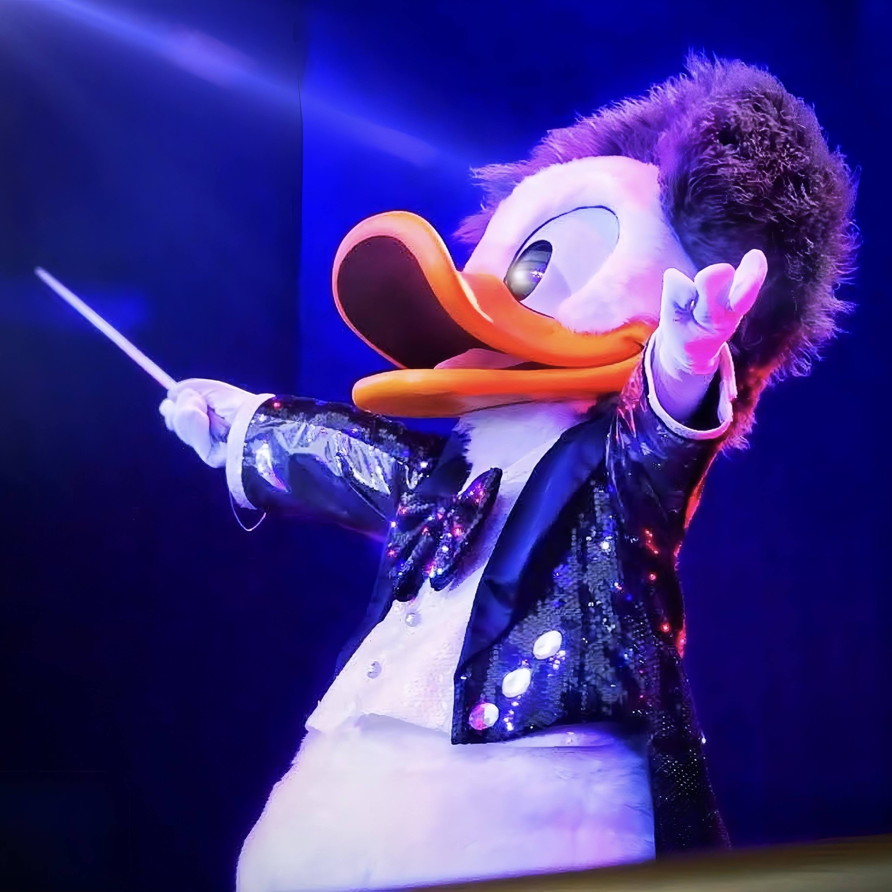

TERU LUCE
ドナルド推しのディズニー好き
ABOUT
小さい頃から親にパークへ連れて行ってもらい、気づけばディズニーが大好きになっていました。
推しはドナルドです。ちょっとおバカなところが大好きで、キャラクターは基本みんな好きです。最近はダンサーさんにも夢中になり始めました。
関東住みなので、たまに舞浜へ行っています。今は受験期であまり行けていませんが、また行ける日を楽しみにしています。
2007年生まれの19歳です。浪人中ですが、気にせずDMをいただけたら嬉しいです！ミートも大歓迎です。